Final Report
Love in the Time of Craigslist <3 is a data-driven exploration into the different ways we look for love in an increasingly digital era. Drawing on hundreds of thousands of Craigslist personal ads from 14 socially and geographically diverse cities across the United States, we've studied how the region you're from affects your quest for love, friendship, sex, or any combination of the three. More specifically, we found significant differences in terms of who's using Craigslist to find connections, what they're looking for, and what sort of language they use to pursue it.
Data
- 317,385 posts from the personal ads section of the craigslists for 14 geographically/culturally varied cities around the United States, each tagged by category (e.g. m4w - man looking for woman, ww4w - two women looking for another woman, t4m - trans for man, etc.) and location
- Fields collected
- post title
- post body
- gender of poster(s)
- gender of person(s) they are seeking
- age
- relationship status
- miscellaneous other, e.g. zodiac sign, body type
- data collection: wrote a python scraper that we ran daily to collect posts from March through April 2016
Hypothesis
Geographically, people use Craigslist Personals differently and with different motives.
Methodology
- Data Integration: Deduplicated data and prepared posts for text processing with nltk tokenizer and stopword removal
- TF-IDF: In order to cluster posts, we needed to represent each post, or document, as a vector of numerical values. We decided to use TF-IDF values, and used the Scikit Learn TF-IDF vectorizer to convert a collection of documents into a matrix of TF-IDF features. When we compared cities, each TF-IDF matrix represented a collection of 5,000 randomly sampled posts from a city––so we had one matrix for Providence, one for Chicago, etc.
- K-means Clustering: The results we are presenting here were drawn from performing 2-means clustering on each city's posts using the Scikit Learn MiniBatchKMeans algorithm.
- We also tested other methods of clustering, for example using the KMeans (not mini-batch) algorithm and using more than 2 clusters. Here's an example of a plot (projected to 2 dimensions using PCA; see next section for more info) of 4-means clustering on a sample of 5,000 posts from Minneapolis.

- the key shows the 3 terms nearest to the centroid for the given cluster. From just looking at these few terms, we can guess at first glance that the green cluster is perhaps about seeking friendship, while the purple may be about romance and love, while the blue is definitely physical/sex oriented, and the pink is definitely about casual sex.
- The reason we decided to go forward with 2-means is that it gave us similar results across all cities –– every city's posts clustered into one sex oriented group of posts and one friendship-and-love oriented group. For future research it would also be interesting to compare cities when clustered into more groups (4-means, 10-means, etc). The difficulty there is that we're manually labeling the clusters based on the top 20 terms that appear, and the more clusters we have the more difficult that becomes –– both to label and to make cross-city comparisons.
- We also tested other methods of clustering, for example using the KMeans (not mini-batch) algorithm and using more than 2 clusters. Here's an example of a plot (projected to 2 dimensions using PCA; see next section for more info) of 4-means clustering on a sample of 5,000 posts from Minneapolis.
- Cosine Similarity: In order to create a visual representation of clusters, we calculated the cosine similarity between each document vector in the TF-IDF matrix. We then projected those distances to 2 dimensions using Principal Component Analysis (PCA), and visualized the resulting coordinates using the pyplot python library.
- Jaccard Similarity between Clusters: We used a normalised, cumulative variation of Jaccard similarity to evaluate uniqueness of language used in a post compared to other posts in its cluster.. More specifically, we averaged each post's Jaccard similarity to all others in our sample with the Jaccard similarities of the other posts from that city, and deemed that the normativity of that city. The inverse of this metric thereby provides a measure of the uniqueness of that city's posts relative to the rest of the country, as displayed in the following graphic (a higher score means a city had lower average Jaccard similarity, indicating greater dissimilarity between that city and the others):
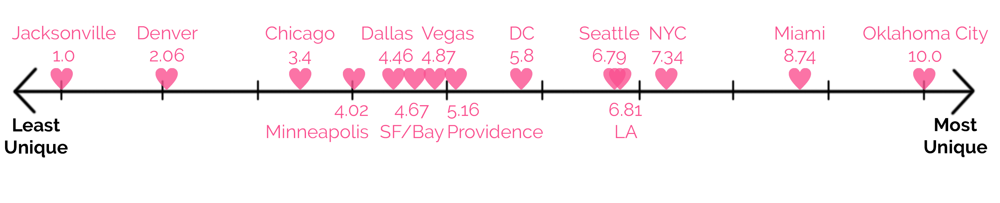
Results
- By comparing the ratio of posts in each city’s love and friendship cluster to those in its sex cluster, we found by a two-means comparison test (α-level: 0.05, p-value: <0.0001, leading us to reject our null hypothesis that cities are pairwise equivalent in sex vs. love interest) that there was a statistically significant difference between different cities for the intentions of their residents, as measured by how interested they were in sex vs. love:
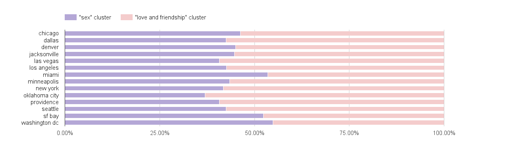
- Because of how we had manipulated the Jaccard similarity statistic, we could not construct a meaningful statistical test around it, but as a method of qualitative analysis, we found it to be quite revealing in conjunction with our visualisation of the most unique words across the country (words that appeared with much greater frequency in one city than any of the others):
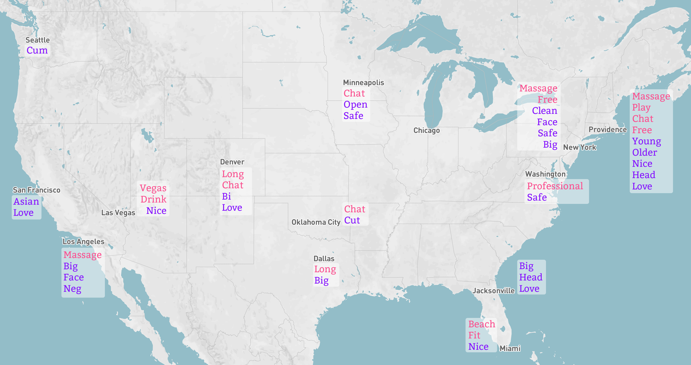
- We observe that Midwestern cities (e.g. Oklahoma City, amongst others) have the word "chat" among the terms that set them apart, in line with a more socially conservative environment that places emphasis on conversation and getting to know someone as the first step in a relationship. Likewise, we found Oklahoma City to be the most unique in terms of the language used there, scoring a 10.0 on our Jaccard similarity scale (of course, it was normalised such that the most unique city would receive a 10), perhaps influenced by it being the most strongly Evangelical of all cities we studied.
- We also observed the influence of demographic factors on the language of love across cities. For example, San Francisco, the city we studied with the largest Asian-American population, was the only for which “Asian” was a keyword. On the other side of the country, Washington D.C.’s most characteristic term was "professional", which initially did not mean much to us until the demo, when several people who had lived in Washington remarked that it was entirely in line with their experience ("people at bars will ask you where you work before they even ask you for your name").
Other Findings
- Gender disparity
Men outnumber women by a factor of almost 10:1 on Craigslist.
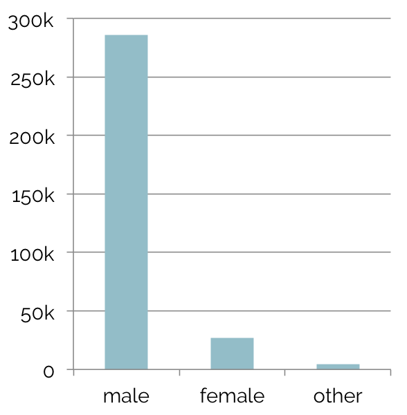
- Predicting the marital statuses of posters
We attempted to predict the marital status of posts of people based on posting type, the length of the title (in characters), the length of the text (in characters), age, body type, and height. Of course, all of this was self reported data, so we were assuming that people were usually honest when posting their marital status because it's an important attribute with little incentive to lie about.
We had 87,789 samples with the 6 variables: 4 numerical and 2 categorical. The 2 categorical variables had 31 and 9 possible outputs, so we made them into 31 and 9 nominal variables; combined we had 44 variables.
Our 6 variables are as follows:
- type: {'w4t': 14, 't4m': 4, 'w4w': 3, 'mm4ww': 16, 'w4m': 0, 'ww4ww': 26, 'ww4mm': 23, 'mm4mm': 29, 'w4mw': 10, 'm4w': 1, 'm4t': 6, 'ww4m': 27, 'w4mm': 25, 'ww4w': 30, 'm4m': 2, 'mw4m': 24, 't4mw': 21, 't4w': 11, 't4t': 5, 't4mm': 18, 'mw4t': 22, 't4ww': 28, 'mw4w': 15, 'mm4mw': 17, 'mm4w': 20, 'm4mw': 7, 'mw4mw': 9, 'm4mm': 13, 'mm4m': 19, 'm4ww': 8, 'w4ww': 12}
- title length: int
- text length: int
- age: int
- body: {'heavy': 3, 'fit': 6, 'athletic': 5, 'big': 0, 'average': 1, 'curvy': 2, 'thin': 4, 'skinny': 7, 'hwp': 8}
- height: int (in cm)
Using these variables, we try to predict:
- status: {'separated': 2, 'widowed': 3, 'never': 6, 'divorced': 1, 'married': 4, 'partnered': 5, 'single': 0}
After cleaning the data, we performed machine learning. We wished to classify the listings into one of 7 marital statuses. We standardized the data so the result wouldn't be heavily skewed by some variables. Then we performed Weighted KNN with 10 neighbors using Euclidean distance, weighting each distance by the squared inverse. We used 5 fold cross validation. Our accuracy rate for the model was 87.6%.
We tried some other machine learning algorithms such as decision trees and SVMs, but they produced ~70% accuracy. This was probably because we had a lot of nominal variables which could have skewed some of the calculations in SVMs. One challenge of using this model is that not everyone posts an age, body type, or height. This flaw could be improved by figuring out a way to accommodate the missing variables. The purpose of this model was to predict someone's marital status if they don't post it.
- Generating random posts
We created a random post generator on craigslist personals using a markov chain. There are 6 different categories for posts: ['m4m', 'm4w', 'msr', 'stp', 'w4m', 'w4w']. For each one of these categories, our model has a different transition matrix for the markov chain used. In the transition matrix, each row represents a word, with special rows representing the start of a post, the end of a post, and punctuation marks.
The transition matrix T was obtained by going through all the posts for a specific category and counting the number of times the following word appeared after it. Afterwards, every row was normalized to sum to 1. T[i][j] represents the probability that the word represented by column j follows the word represented by row i. Here, words include words as well as the special START/END symbols and punctuation marks. Each word was lowercased because we believed it would create better results; some people tend to capitalize random letters in word
To randomly generate a post, we start at the START row in the transition matrix T. We sample from the distribution represented by the START row; suppose we sampled column c. Then we go to row c and repeat this process until we reach the END row. We also generated the "most probable post" for each of the 6 categories. To do this, at each row in the transition matrix T, we looked for the highest value T[i][j] given i to get the next state (word) represented by j.
An example post generated from w4w: "hello ladies 32yo married and getting out of myself so i want to get to help i can go to i will do i am generally attracted to be attracted to hearing from you are interested please do have had fantasies for a woman..."
- Lying on craigslist
Heights are self reported on Craigslist. We conjectured that many people would lie about their height on Craigslist to appear more attractive to readers. For heights, we took the 4 most popular categories in Craigslist Personals: men searching for men (m4m), men searching for women (m4w), women searching for men (w4m), and women searching for women (w4w). We plotted a histogram of heights for each of these categories. On each of these plots, the y-axis represents the number of samples and the x-axis represents the heights, in inches.The orange curve represents the U.S. distribution of heights, based on gender (male or female) (source: http://www.cdc.gov/nchs/data/nhsr/nhsr010.pdf). The red curve is the normal distribution curve that fits the observed data, which is plotted as a histogram.
- m4m:
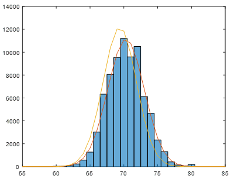
- w4w:
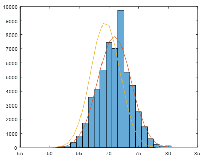
- w4m:
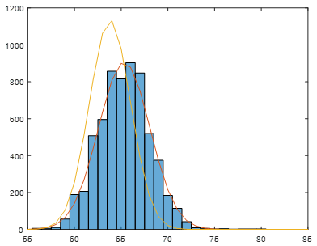
- w4w:

It seems like everyone - women and men - added 1 to 2 inches to their heights. Also, note that in the m4w plot, and less apparent in the m4m plot, there is an improbable spike in men claiming they are 72 inches, or 6 feet. We expected this result, and confirmed it with a test for normality. The samples are sufficiently numerous that they should fall into a normal distribution around the population mean, but the p-value for this supposition was <0.001, so we rejected it at an α-level of 0.05.
What Worked
- For all statistical tests (detailed above), we were able to reject our null hypotheses, as desired, at a level of α = 0.05.
- We succeeded in probabilistically auto-generating posts of any particular category using a Markov chain model, which differed noticeably (as desired) depending on which category of posts it was trained on. While they weren’t grammatically perfect, they would by no means be the most incoherent posts on Craigslist.
- We succeeded in probabilistically auto-generating posts of any particular category using a Markov chain model, which differed noticeably (as desired) depending on which category of posts it was trained on. While they weren’t grammatically perfect, they would by no means be the most incoherent posts on Craigslist.
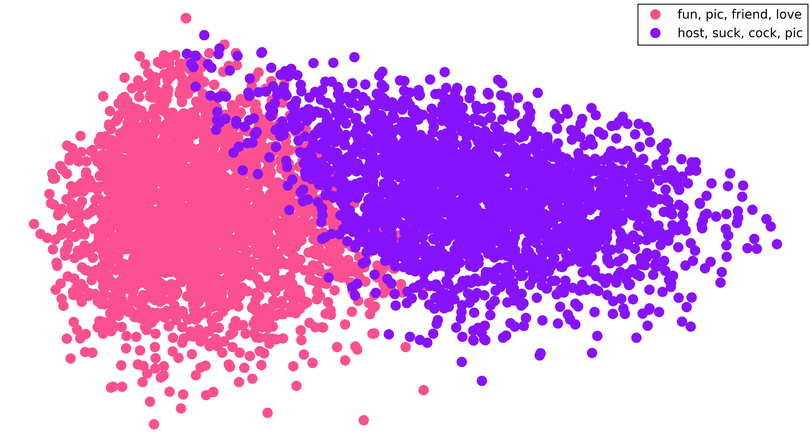
What Didn't Work
- We were unable to receive developer recognition from craigslist, limiting our abilities to acquire data from posts as their servers would detect our high volume of requests (greatly exceeding normal use) and reject any future ones for increasingly long durations of time.
- We were also unable to automatically generate labels for different post clusters as their constituents were uncategorized to begin with and on account of the diversity of language used in all cities.
- We attempted to use the elbow method, a technique that finds the point of diminishing returns in the amount of variance - or entropy - explained by the addition of an Kth additional cluster, to determine the number of clusters in our data set to run K-means clustering on. This method returned to us a result of ~20 clusters as the maximum value of K that would still be mathematically reasonable. While this does not contradict our ultimate decision to use 2 clusters (2 < 20, obviously), as explained above, it did little to make that decision easier, as an upper bound of 20 did not meaningfully narrow down the range of possible values of K that we were contemplating.
Future directions and open questions to explore
- We would refine our Markov model for post generation, including n-grams of greater lengths, a probabilistic distribution over post length, and other devices to increase the coherence and appeal of our generated posts.li>
- If we were able to sufficiently refine the auto-generated posts, we could even post them to the personal ads section of Craigslist and study how real users respond. This would solve one of the great limitations of our project, that being we had no method of determining how readers responded to individual ads, as all subsequent correspondence between a poster and a reader occurs privately, and allow us to begin answering questions such as what kind of posts are more likely to receive responses.
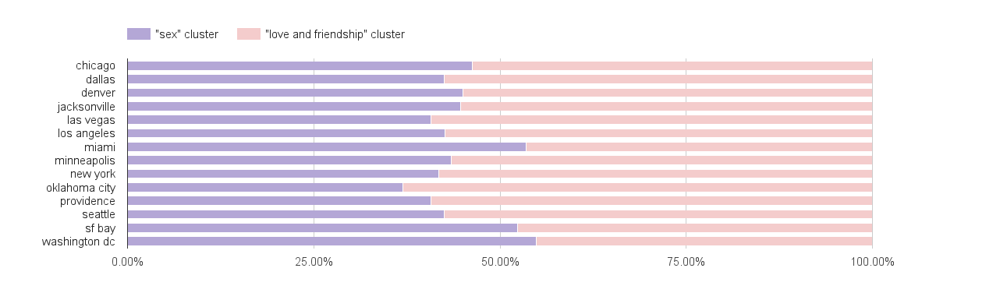
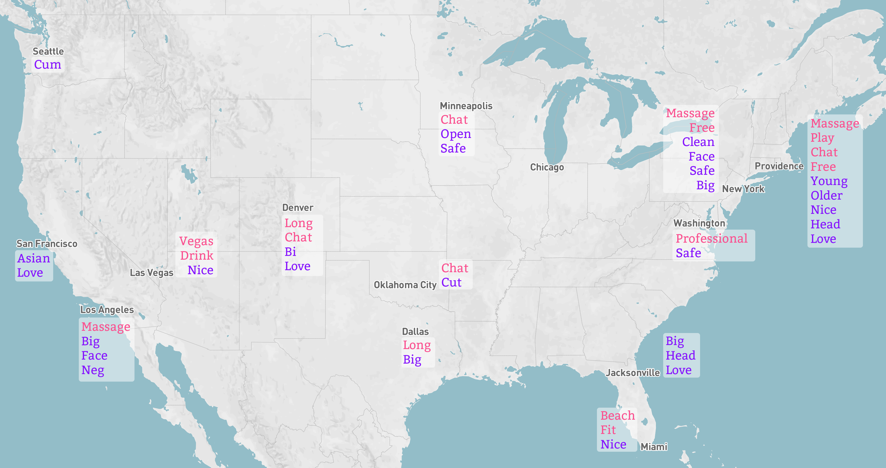
Men outnumber women by a factor of almost 10:1 on Craigslist.
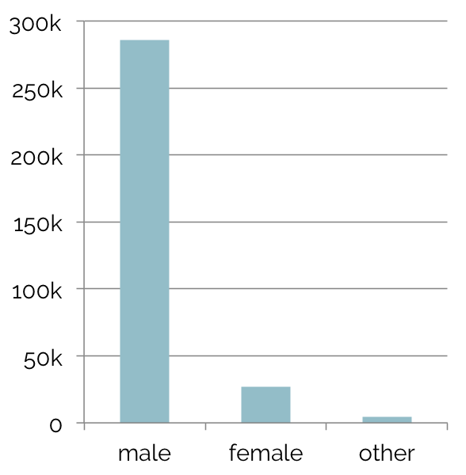We attempted to predict the marital status of posts of people based on posting type, the length of the title (in characters), the length of the text (in characters), age, body type, and height. Of course, all of this was self reported data, so we were assuming that people were usually honest when posting their marital status because it's an important attribute with little incentive to lie about.
We had 87,789 samples with the 6 variables: 4 numerical and 2 categorical. The 2 categorical variables had 31 and 9 possible outputs, so we made them into 31 and 9 nominal variables; combined we had 44 variables. Our 6 variables are as follows:
- type: {'w4t': 14, 't4m': 4, 'w4w': 3, 'mm4ww': 16, 'w4m': 0, 'ww4ww': 26, 'ww4mm': 23, 'mm4mm': 29, 'w4mw': 10, 'm4w': 1, 'm4t': 6, 'ww4m': 27, 'w4mm': 25, 'ww4w': 30, 'm4m': 2, 'mw4m': 24, 't4mw': 21, 't4w': 11, 't4t': 5, 't4mm': 18, 'mw4t': 22, 't4ww': 28, 'mw4w': 15, 'mm4mw': 17, 'mm4w': 20, 'm4mw': 7, 'mw4mw': 9, 'm4mm': 13, 'mm4m': 19, 'm4ww': 8, 'w4ww': 12}
- title length: int
- text length: int
- age: int
- body: {'heavy': 3, 'fit': 6, 'athletic': 5, 'big': 0, 'average': 1, 'curvy': 2, 'thin': 4, 'skinny': 7, 'hwp': 8}
- height: int (in cm)
Using these variables, we try to predict:
- status: {'separated': 2, 'widowed': 3, 'never': 6, 'divorced': 1, 'married': 4, 'partnered': 5, 'single': 0}
After cleaning the data, we performed machine learning. We wished to classify the listings into one of 7 marital statuses. We standardized the data so the result wouldn't be heavily skewed by some variables. Then we performed Weighted KNN with 10 neighbors using Euclidean distance, weighting each distance by the squared inverse. We used 5 fold cross validation. Our accuracy rate for the model was 87.6%.
We tried some other machine learning algorithms such as decision trees and SVMs, but they produced ~70% accuracy. This was probably because we had a lot of nominal variables which could have skewed some of the calculations in SVMs. One challenge of using this model is that not everyone posts an age, body type, or height. This flaw could be improved by figuring out a way to accommodate the missing variables. The purpose of this model was to predict someone's marital status if they don't post it.
We created a random post generator on craigslist personals using a markov chain. There are 6 different categories for posts: ['m4m', 'm4w', 'msr', 'stp', 'w4m', 'w4w']. For each one of these categories, our model has a different transition matrix for the markov chain used. In the transition matrix, each row represents a word, with special rows representing the start of a post, the end of a post, and punctuation marks.
The transition matrix T was obtained by going through all the posts for a specific category and counting the number of times the following word appeared after it. Afterwards, every row was normalized to sum to 1. T[i][j] represents the probability that the word represented by column j follows the word represented by row i. Here, words include words as well as the special START/END symbols and punctuation marks. Each word was lowercased because we believed it would create better results; some people tend to capitalize random letters in word
To randomly generate a post, we start at the START row in the transition matrix T. We sample from the distribution represented by the START row; suppose we sampled column c. Then we go to row c and repeat this process until we reach the END row. We also generated the "most probable post" for each of the 6 categories. To do this, at each row in the transition matrix T, we looked for the highest value T[i][j] given i to get the next state (word) represented by j.
An example post generated from w4w: "hello ladies 32yo married and getting out of myself so i want to get to help i can go to i will do i am generally attracted to be attracted to hearing from you are interested please do have had fantasies for a woman..."
Heights are self reported on Craigslist. We conjectured that many people would lie about their height on Craigslist to appear more attractive to readers. For heights, we took the 4 most popular categories in Craigslist Personals: men searching for men (m4m), men searching for women (m4w), women searching for men (w4m), and women searching for women (w4w). We plotted a histogram of heights for each of these categories. On each of these plots, the y-axis represents the number of samples and the x-axis represents the heights, in inches.The orange curve represents the U.S. distribution of heights, based on gender (male or female) (source: http://www.cdc.gov/nchs/data/nhsr/nhsr010.pdf). The red curve is the normal distribution curve that fits the observed data, which is plotted as a histogram.
- m4m:
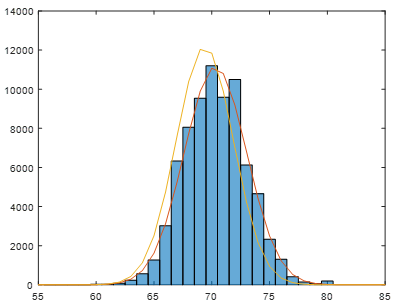 - w4w:
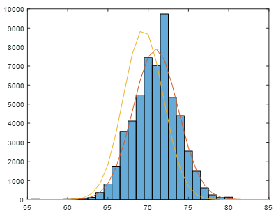 - w4m:
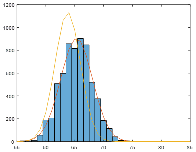 - w4w:
It seems like everyone - women and men - added 1 to 2 inches to their heights. Also, note that in the m4w plot, and less apparent in the m4m plot, there is an improbable spike in men claiming they are 72 inches, or 6 feet. We expected this result, and confirmed it with a test for normality. The samples are sufficiently numerous that they should fall into a normal distribution around the population mean, but the p-value for this supposition was <0.001, so we rejected it at an α-level of 0.05.
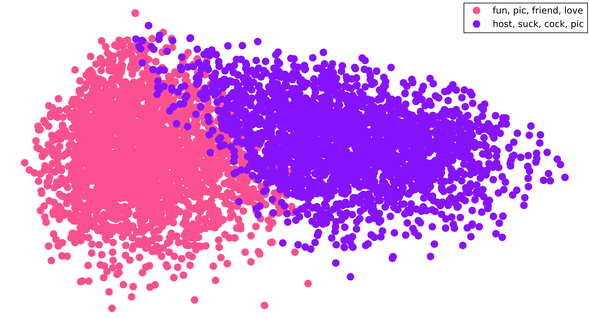